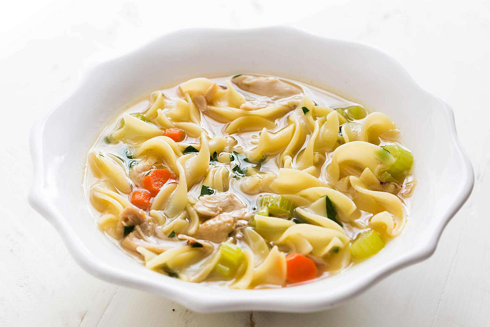
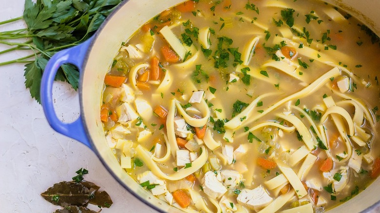

Foodies!
For All Your Delicious Needs
Author: Isabelle Grady
2nd Recipe: Chicken Soup
What you will need:
- 2 large chicken breasts with bones
- Sprinkle some Instant Onion and Instant parsley
- 1 Chicken boullion cube
- 3 large celery stalks
- 3 large carrots
- 1 large onion
- 2 envelopes of Lipton Chicken Soup
- 2 Cans of Cream of Chicken
- 2 cans of Chicken Broth
- Noodles
Step-by-Step:
- Cook chicken breasts in water with boullion cube, sprinked with instant onion and parsley
- Cut up carrots, celery, and onion
- When chicken is cooked, cool and cut up. Discard bones
- Using a large pot, add broth from chicken, additional cans of broth, Lipton soup envelopes, and cream of chicken soup
- Add cooked chicken and vegetables
- Cook until veggies are tender
- In a separate pot, cook noodles according to package directions. Drain in colander and add to soup
- Simmer until ready to eat
- Serve with crusty bread
Chicken Soup
 |
 |
 |